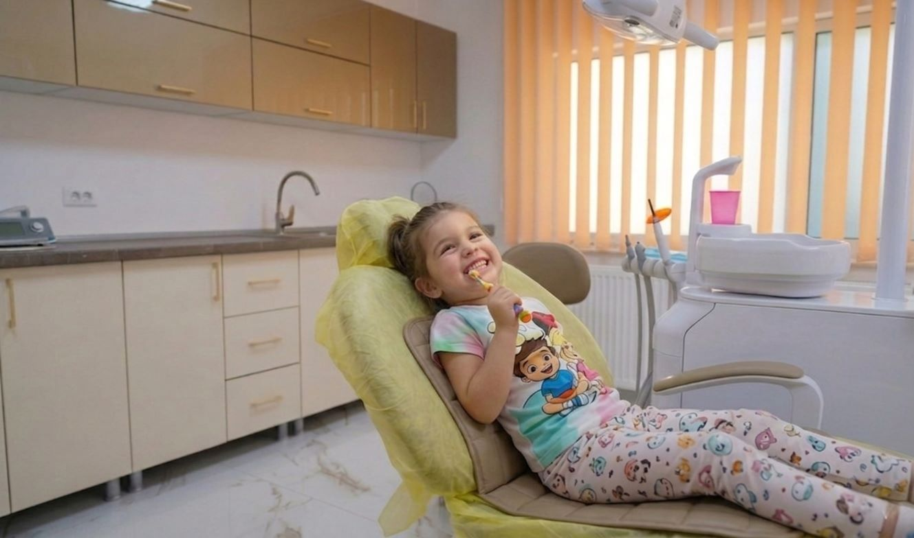

Pedodonție în Comarnic
Pedodonția se ocupă de sănătatea dentară a copiilor, de la primele vizite până la adolescență. La HopeDent, consultațiile, tratamentele și recomandările preventive sunt abordate cu răbdare, claritate și grijă pentru confortul copilului și al părinților.
Dinți sănătoși de mici
Pedodonția include consultații regulate, igienizare profesională, tratamente pentru carii și recomandări pentru menținerea sănătății dentare la copii. Este specialitatea care ajută părinții să prevină problemele dentare ale copiilor sau să le trateze din timp.
La HopeDent, fiecare consultație pentru copii începe cu o evaluare atentă și cu explicații clare adresate atât copilului cât și părinților. Copilul înțelege ce se întâmplă, ce opțiuni are și care sunt pașii recomandați pentru situația sa.

Tratamente și servicii pentru copii
În cadrul consultațiilor de pedodonție, medicul evaluează sănătatea dinților și a gingiilor copiilor, identifică eventualele probleme și recomandă tratamentele potrivite.
Consultații pentru copii
Evaluarea stării dentare a copiilor și stabilirea pașilor necesari pentru prevenție sau tratament.
Igienizare profesională pediatrică
Curățare profesională adaptată copiilor și recomandări pentru menținerea igienei orale acasă.
Tratamentul cariilor la copii
Identificarea și tratarea cariilor dentare la copii, pentru protejarea structurii dintelui.
Obturații dentare pentru copii
Refacerea dintelui afectat prin materiale adaptate situației clinice a copiilor.
Prevenție pentru copii
Recomandări personalizate pentru controale periodice și îngrijirea corectă a dinților la copii.
Plan de tratament pediatric
Explicarea opțiunilor disponibile și stabilirea unui parcurs potrivit pentru copil.
Când este bine să mergi la dentist cu copilul?
O consultație stomatologică pentru copii nu este necesară doar atunci când apare durerea. Multe probleme dentare pot fi prevenite sau tratate mai ușor dacă sunt observate din timp.
Claritate înainte de tratament
La HopeDent, copilul și părinții primesc explicații clare despre problema identificată și despre opțiunile de tratament. Scopul este ca fiecare decizie să fie luată informat, fără grabă și fără presiune.
Evaluare
Medicul verifică starea dinților și a gingiilor copilului și discută cu părinții despre simptome.
Recomandare
Sunt explicate opțiunile potrivite și pașii necesari pentru tratament.
Tratament
Procedura este realizată cu atenție, într-un ritm adaptat confortului copilului.
Prevenție
Pacientul primește recomandări pentru menținerea rezultatelor și evitarea problemelor viitoare.
Când este nevoie de o altă specialitate?
În unele cazuri, consultația de pedodonție poate indica nevoia unei evaluări suplimentare în altă specialitate, cum ar fi ortodonția, parodontologia, protetica sau chirurgia dentară.
Întrebări frecvente
Cât de des este recomandat controlul stomatologic pentru copii?
Frecvența controalelor poate varia în funcție de vârsta și starea dentară a copilului. În general, controalele periodice ajută la identificarea problemelor din timp, înainte ca acestea să devină mai greu de tratat.
Trebuie să merg la dentist cu copilul dacă nu mă doare nimic?
Da, este recomandat. Unele probleme dentare pot evolua fără durere la început, iar o consultație poate ajuta la prevenție și la menținerea sănătății orale.
Ce se întâmplă la prima consultație pentru copii?
Medicul evaluează starea dinților și a gingiilor copilului, discută cu părinții despre simptome sau nevoi și recomandă pașii potriviți pentru tratament sau prevenție.
Pot veni pentru o igienizare profesională cu copilul?
Da. Igienizarea profesională face parte din îngrijirea dentară de bază pentru copii și poate fi recomandată în funcție de nevoile copilului.